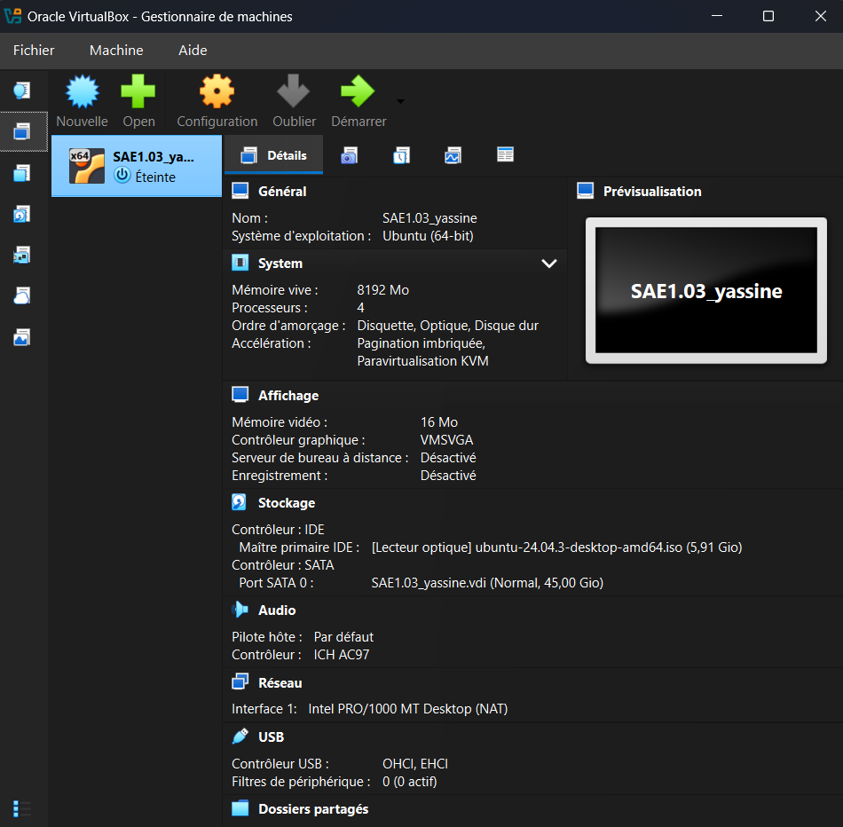
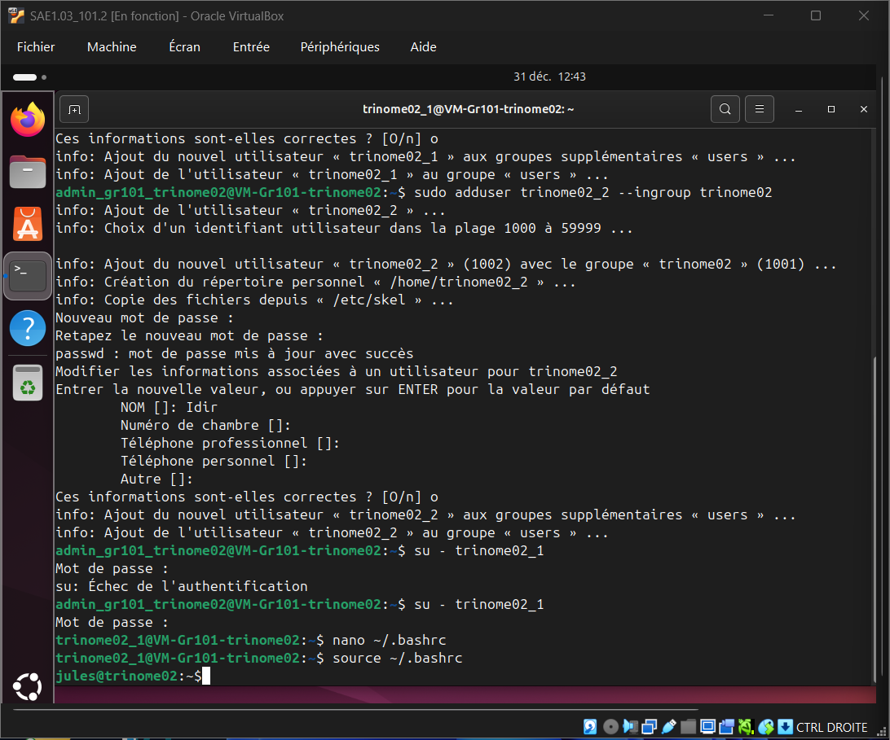
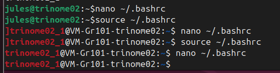
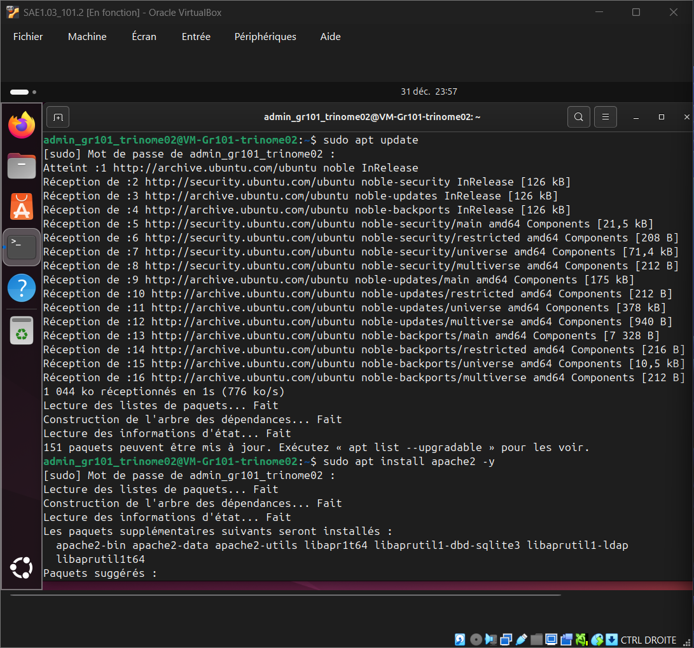
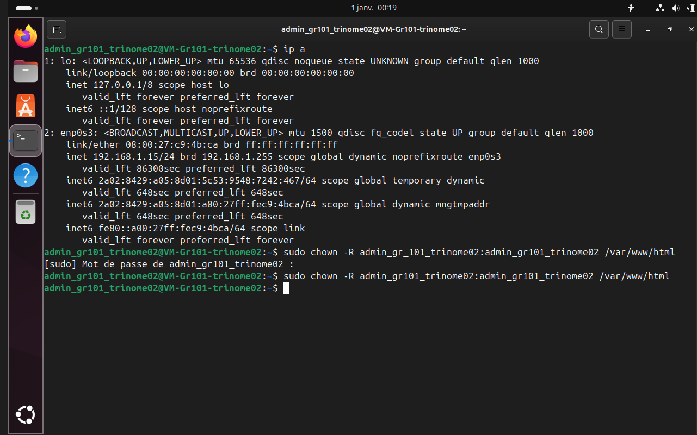
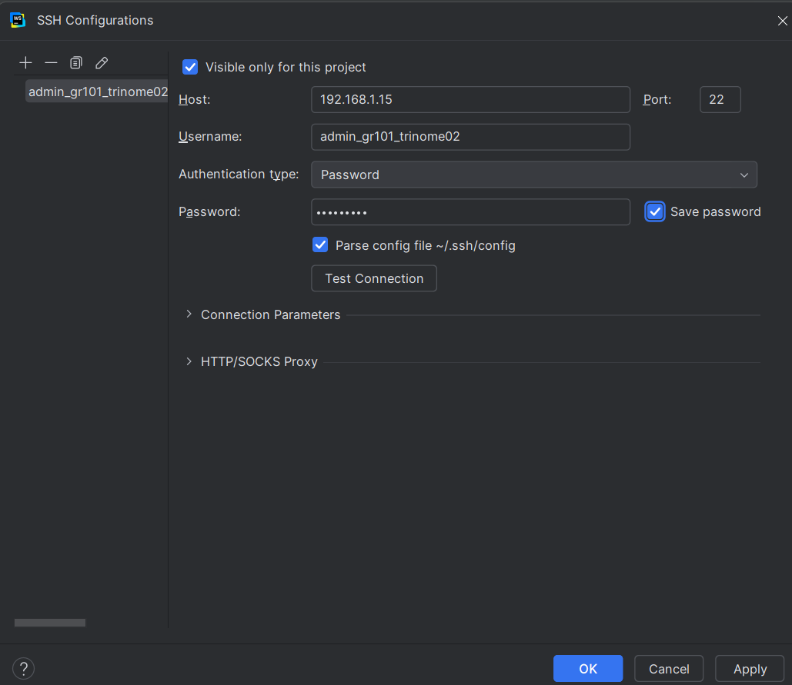

Mes choix d'installation et réponses aux questions
Pour répondre aux exigences de performance du projet, voici les choix techniques que j'ai retenus pour la configuration de la machine virtuelle :

Capture d'écran validant l'allocation des ressources (4 CPU, 8 Go RAM).
Pour la sécurité, il ne faut jamais travailler en tant que "root" (le super-administrateur). J'ai donc créé un utilisateur standard avec mon nom de groupe pour administrer le serveur proprement (via la commande sudo).

J'ai modifié le fichier .bashrc pour ajouter de la couleur à l'invite de commande. C'est pratique pour identifier immédiatement qui est connecté et cela rend le terminal plus lisible et agréable.

Logiciel installé : Apache2.
Apache est le serveur HTTP le plus utilisé. C'est le logiciel qui écoute les requêtes sur le port 80 et renvoie mes fichiers HTML. Je l'ai installé et activé avec la commande apt install apache2.

/var/www/html appartient à root. J'ai utilisé la commande chown pour m'attribuer la propriété du dossier et pouvoir modifier les fichiers sans erreur de permission.
Outil utilisé : WebStorm sur Windows.
L'édition de code directement dans le terminal Linux étant fastidieuse, j'ai configuré une connexion SFTP sur WebStorm. Cela me permet de développer confortablement sur Windows et de synchroniser les fichiers instantanément sur le serveur.

.vbox) et de disque virtuel (.vdi).
Organisation du travail de groupe.
| Tâches / Semaines | Semaine 1 Découverte |
Semaine 2 Install. |
Semaine 3 Config. |
Semaine 4 Rendu |
|---|---|---|---|---|
| 1. Installation VM & OS Ubuntu | Jules (Installation & OS) | |||
| 2. Gestion Utilisateurs & Bash | Yassine | |||
| 3. Config. Réseau & Apache | Yassine | |||
| 4. Dev. Site Web (HTML/CSS) | Idir (Maquettage & Code) | |||
| 5. Déploiement SFTP & Tests | Équipe complète | |||
| 6. Rédaction Dossier Technique | Yassine | |||